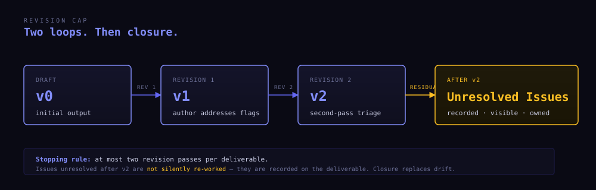

researcher_agent
LLM-driven research assistance framework
Structured workflows for literature → manuscript → review → revision.
Source-grounded. Human-in-the-loop. Limited revision loops.
4 skills · 24 modes · 21 sub-agent personas
A research assistant
that won't betray you.
Every LLM-assisted writer
hits the same four walls.
Citation hallucination
The model fabricates plausible-looking references. Authors, titles, DOIs that don't exist. Catastrophic at submission time.
Generic LLM prose
Every output drifts toward the same hedged, mid-register register. Your voice disappears. So does the argument's edge.
Hidden AI use
Venues now require AI disclosure, but the tools don't help you write it. You either over-disclose, under-disclose, or guess.
Endless revision
One more pass, then one more, then five more. No stopping rule. The doc keeps shifting and nothing converges.
researcher_agent answers each one explicitly.
The references look right.
Half of them aren't real.
The situation
You ask an LLM for a literature review. It returns confident paragraphs with confident citations. A reviewer checks one of the DOIs. The paper doesn't exist. Another author was never at that venue. A third citation is real but says the opposite of what was claimed. Every output becomes a fact-check job — defeating the point of using assistance at all.
The fix
Every factual claim in any produced artefact must be anchored to one of three sources: (1) a cited external source with a locator — page, section, paragraph; (2) a user-supplied input; (3) a framework-internal computation, explicitly marked. Claims with no anchor become <unverified> in a notes section. The research-verify mode runs claim-by-claim, returning a structured verdict for each.
Every claim. One source. One verdict.
Every output sounds
like every other output.
The situation
Default LLM register is hedged, smooth, average. It is what comes out when you ask for "a literature review" without parameterizing how. A Socratic exploration of an unfamiliar topic and a Methods-section draft for a known result deserve different cognitive postures — but the tool gives you the same one. Worse, the helpfulness training pushes every output toward consensus, smoothing exactly the disagreements that make the literature interesting.
The fix
Each skill exposes modes along a spectrum: Generative (encourages your thinking, refuses to give you the answer), Hybrid (mixed default), Analytic (precise, low-creativity, high-accuracy output). 24 modes total. The mode you pick determines what the system won't do — Generative modes refuse to deliver finished prose; Analytic modes refuse to elaborate beyond the verifiable.
Three postures. One framework.
| Bias | What it does | What it refuses |
|---|---|---|
| Generative | Surfaces questions. Probes assumptions. Generates counter-arguments. | Will not hand you the answer. |
| Hybrid | Mixes synthesis with checkpoints. Default for most production work. | Will not run unattended on judgment calls. |
| Analytic | Reports facts. Verifies claims. Audits citations. Formats output. | Will not elaborate or interpret beyond the evidence. |
research-socratic probes your question without writing it for you. research-systematic runs PRISMA with multiple gates. compose-format converts files without touching the argument. Same framework, three postures, no wasted moves.
The disclosure statement
is now part of the paper.
The situation
Most major venues now require explicit AI-assistance disclosure. Some want a methods-section paragraph, others a footnote, others a specific cover-letter line. Each policy is slightly different. The tools you used to draft the paper don't tell you what they did, when, or how to describe it. You end up either over-disclosing (writing "AI was used throughout" out of caution) or under-disclosing (writing nothing and hoping). Neither is honest.
The fix
compose-disclosure is a first-class mode. It generates venue-specific AI-assistance statements: which skills ran, what they produced, what the human did, what the human approved. Cross-reference to the project's pipeline-logbook for auditability. The framework's design principle is transparency over deception — it helps you produce better work and document where AI assisted, not conceal it.
Venue-specific. Audit-ready.
One more pass. Then one more.
The doc never lands.
The situation
Each revision cycle reopens decisions you thought were closed. The model's "let me improve this" suggestions become "let me rewrite this entirely". Issues raised in pass 3 contradict fixes from pass 1. You lose track of what's been considered, what's been deferred, what's actually settled. Eventually you ship something out of exhaustion rather than completion.
The fix
Maximum two revision loops per deliverable. Issues unresolved after the second pass don't get silently re-worked — they are recorded as Unresolved Issues attached to the deliverable. The author sees exactly what was raised, what was fixed, what was deferred and why. Closure replaces drift.
A stopping rule the model can't argue with.

Skills · sub-agents · slash commands · references
- research
- compose
- critique
- orchestrate
- SKILL.md + modes
- references/ + templates/
- question-formulator
- source-searcher
- source-verifier
- bias-assessor
- synthesizer
- devil-advocate
- report-compiler
- /research-socratic
- /research-systematic
- /research-verify
- /compose-full
- /compose-disclosure
- /critique-full
- /orchestrate-pipeline
Discoverable by Claude Code via .claude/skills/, .claude/agents/, .claude/commands/.
Install once at user level, or symlink per project.
Four skills. Twenty-four modes.
Literature investigation, source verification, synthesis.
› full
› socratic
› systematic
› verify
› annotate
› evaluate
Manuscript drafting, revision, formatting, disclosure.
› outline
› revision
› revision-triage
› abstract
› lit-section
› format
› citation-check
› disclosure
Peer-review-style manuscript critique.
› quick
› methodology
› re-review
› guided
› calibration
End-to-end pipeline across the other three.
› resume
10 stages
4 mandatory gates
pipeline-logbook
resumable
End-to-end. Ten stages. Six gates.

Every gate ◆ requires explicit approval. Crash, close the terminal,
resume next week with /orchestrate-resume.
Five rules. Non-negotiable.
Feature-complete. Released 2026-05-21.
CC BY-NC 4.0 · © 2026 Oğuz Gençer
✓ Personal academic work · teaching · non-profit research. ✗ Commercial SaaS · paid services · for-profit revenue-generating use.